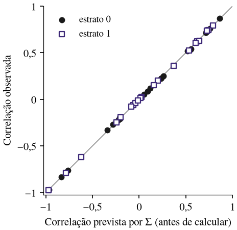
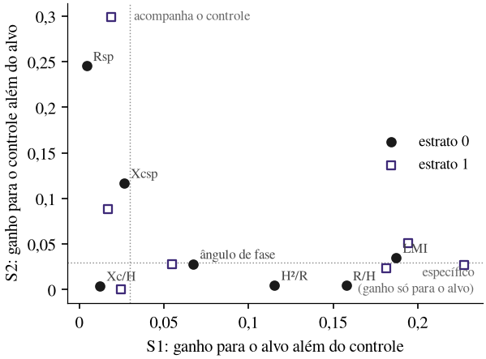

BioMS Zaku: decomposição algébrica e auditoria fora da amostra de índices e equações preditivas
Thalles Paul Leandro Mota
Resumo. Índices de bioimpedância costumam ser validados pela correlação com uma medida de referência, mas quase todos crescem com o tamanho do corpo e se correlacionam com qualquer tecido. O BioMS Zaku é um software livre que audita esses índices antes de aceitá-los. Ele escreve cada índice como um vetor de expoentes das variáveis medidas, prevê a correlação entre dois índices antes de calculá-los, a partir da matriz de covariância dos logaritmos, e testa fora da amostra se o índice prediz o alvo além do que um controle negativo declarado já prediz. Na execução completa do exemplo do pacote, a correlação prevista diferiu da observada em no máximo 0,015, um par de índices publicados foi identificado como redundante (ρ = 0,97), e a auditoria separou índices específicos para a massa magra de índices que acompanham a massa gorda.
Ferramentas: Python · NumPy · pandas · SciPy · scikit-learn · matplotlib. Código: aberto (licença MIT) no GitHub.
1. Método
Cada índice que é produto de potências da resistência, da reatância, da estatura e da massa é representado pelo seu vetor de expoentes; com a matriz de covariância dos logaritmos dessas variáveis, a correlação entre dois índices é prevista antes de calculá-los. A auditoria declara um alvo e um controle negativo e mede, em reamostragens idênticas fora da amostra, o ganho do índice para o alvo além do controle (S1) e para o controle além do alvo (S2).

2. Engenharia e reprodutibilidade
Pacote em Python sob licença MIT, com interface guiada no terminal e caderno Jupyter pronto. A saída é um relatório HTML autocontido em português, inglês, espanhol ou italiano. Os pressupostos estão fixados em cinco contratos normativos; o catálogo traz 32 métodos publicados, oito deles conferidos na fonte primária. Um manifesto registra configuração, sementes, versões e o SHA-256 de cada tabela, e a suíte tem 246 funções de teste.

3. Aplicação prática
- Antes de adotar ou publicar um índice: verificar se ele repete um índice já publicado, se mede o alvo além do controle negativo e se acrescenta algo à estatura e à massa corporal.
- Em parcerias com dados sensíveis: as tabelas de saída nunca contêm dados individuais, e a análise pode rodar no ambiente do parceiro.
- Em revisão de artigos e equações: o relatório registra configuração, sementes e códigos de verificação, e qualquer pessoa pode refazer os números.
4. Limitações
A demonstração usa dados sintéticos gerados a partir de parâmetros do NHANES 1999–2004; os vereditos descrevem o exemplo, não uma população real. O software está na primeira versão candidata (1.0.0rc1).
Idealizador principal e desenvolvedor: T. P. L. Mota, com contribuições de L. C. Oliveira Gonçalves e A. M. de Magalhães Neto.